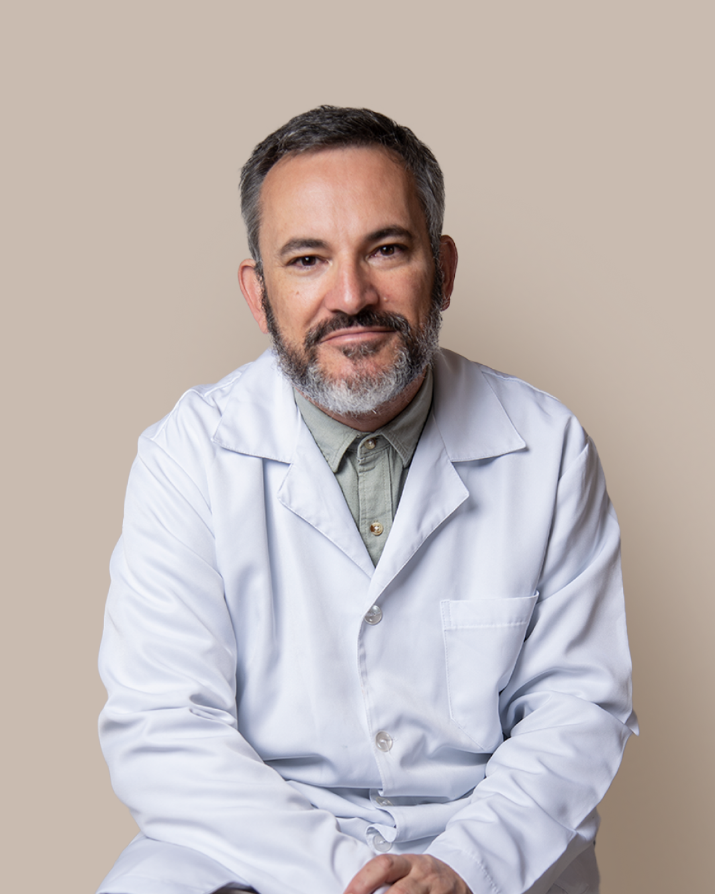
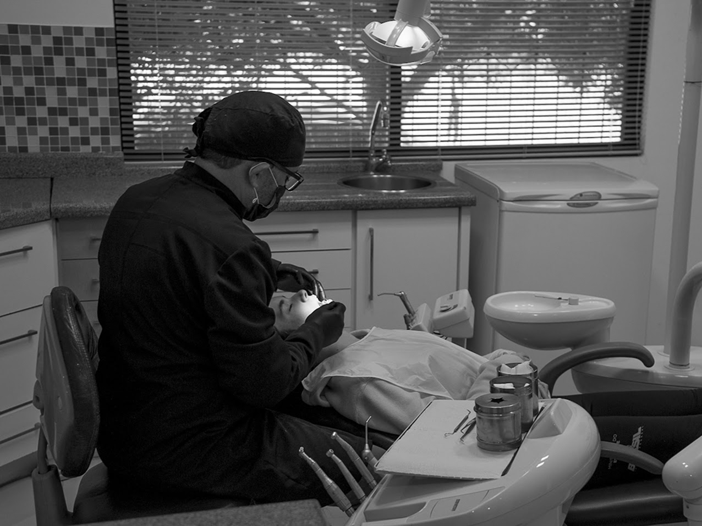

Especialista em Implantes, Ortodontia e Estética Dental. Atendimento humanizado em 5 cidades de Santa Catarina, com tratamentos modernos e personalizados para quem busca segurança e resultado real.

Experiência e excelência clínica em Santa Catarina.
Perdeu um dente? Recupere a segurança de sorrir, mastigar e viver com mais confiança. Implantes modernos com planejamento personalizado e resultado definitivo.
Quero meu implanteAlinhe seu sorriso com planejamento personalizado e tecnologia moderna. Opções discretas que respeitam sua rotina profissional e social.
Quero alinhar meus dentesLentes de contato, clareamento e harmonização para elevar sua autoestima. Transforme seu sorriso para o momento mais importante da sua vida.
Quero transformar meu sorrisoSoluções funcionais e estéticas para restaurar seu sorriso com naturalidade e conforto duradouro.
Quero saber maisEntre em contato pelo WhatsApp. Nossa equipe agenda sua consulta de avaliação — gratuita e sem compromisso.
O Dr. Luciano avalia seu caso e apresenta um plano personalizado com prazo, etapas e condições claras.
Inicie seu tratamento com segurança e o acompanhamento próximo de quem tem 30 anos de experiência.

Com mais de três décadas de atuação na odontologia, o Dr. Luciano Rosa Varela construiu uma trajetória baseada em confiança, excelência clínica e atendimento humanizado.
Especialista em Ortodontia e Implantes, formado pela UFSC, dedica-se a oferecer tratamentos modernos e personalizados para pacientes que desejam recuperar a saúde bucal, autoestima e qualidade de vida.
Cada sorriso é tratado de forma única, respeitando as necessidades e objetivos de cada paciente.
Anos de experiência
Cidades atendidas
Atendimento humanizado
"Fiz meu implante com o Dr. Luciano e foi a melhor decisão que tomei. Tinha muito medo, mas ele me explicou tudo com calma. O resultado ficou perfeito e voltei a sorrir sem vergonha."
"Fiz meu tratamento ortodôntico com o Dr. Luciano e superou todas as expectativas. Atendimento humanizado, clínica moderna e resultado que mudou minha autoestima completamente."
"Fiz as lentes de contato dental antes do meu casamento. Resultado incrível! O Dr. Luciano entendeu exatamente o que eu queria e entregou um sorriso natural e lindo."
— Dr. Luciano Rosa Varela, CRO 4618
O procedimento é realizado com anestesia local, então você não sente dor durante a cirurgia. Após o procedimento, pode haver um leve desconforto por 2 a 3 dias, facilmente controlado com medicação. A grande maioria dos pacientes se surpreende com o quão tranquilo é o processo.
O tempo varia de acordo com a complexidade de cada caso. Em média, os tratamentos duram entre 18 e 30 meses. Na avaliação gratuita, o Dr. Luciano apresenta uma estimativa personalizada para o seu caso específico.
Sim. Trabalhamos com diversas formas de pagamento e parcelamento para que o tratamento caiba no seu orçamento. As condições são discutidas na consulta de avaliação, de forma transparente e sem compromisso.
O Dr. Luciano atende em 5 cidades de Santa Catarina: Anita Garibaldi, Celso Ramos, Lages, Videira e Abdon Batista. Entre em contato pelo WhatsApp para saber os dias de atendimento na cidade mais próxima de você.
É simples: clique no botão do WhatsApp, envie uma mensagem e nossa equipe agenda seu horário. A avaliação é gratuita e sem compromisso — você conhece o plano de tratamento antes de tomar qualquer decisão.
Com os cuidados adequados, o implante pode durar a vida toda. É a solução mais definitiva para reposição de dentes perdidos. O Dr. Luciano orienta cada paciente sobre os cuidados necessários para garantir a longevidade do resultado.
Fale no WhatsApp para saber os dias de atendimento na sua cidade.
Nossa equipe está pronta para te atender com cuidado, clareza e um plano de tratamento personalizado para a sua realidade.
CRO 4618 — Especialista registrado no Conselho Regional de Odontologia de Santa Catarina